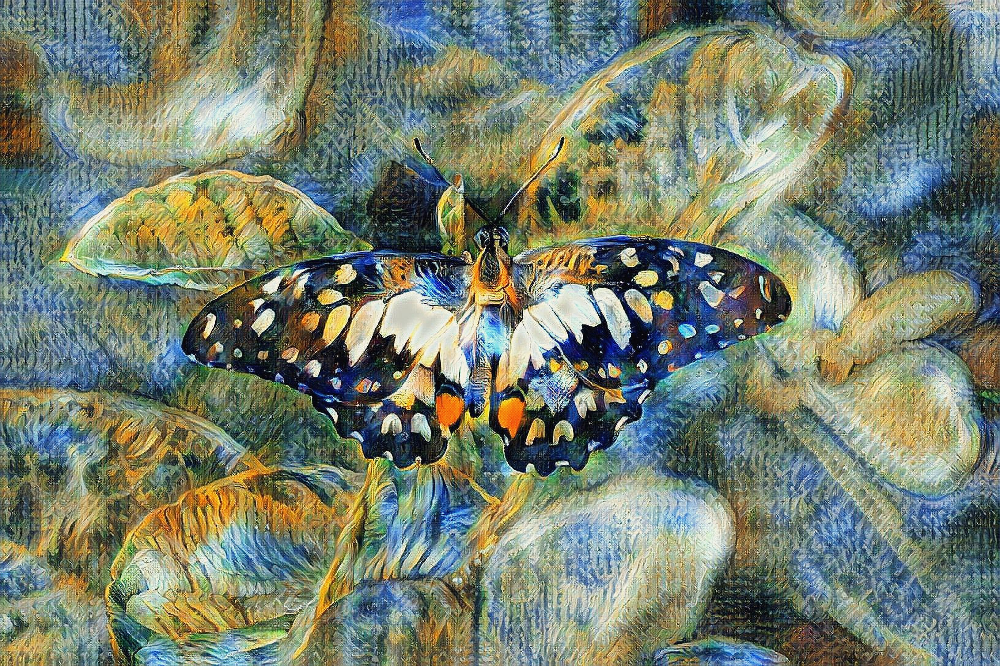
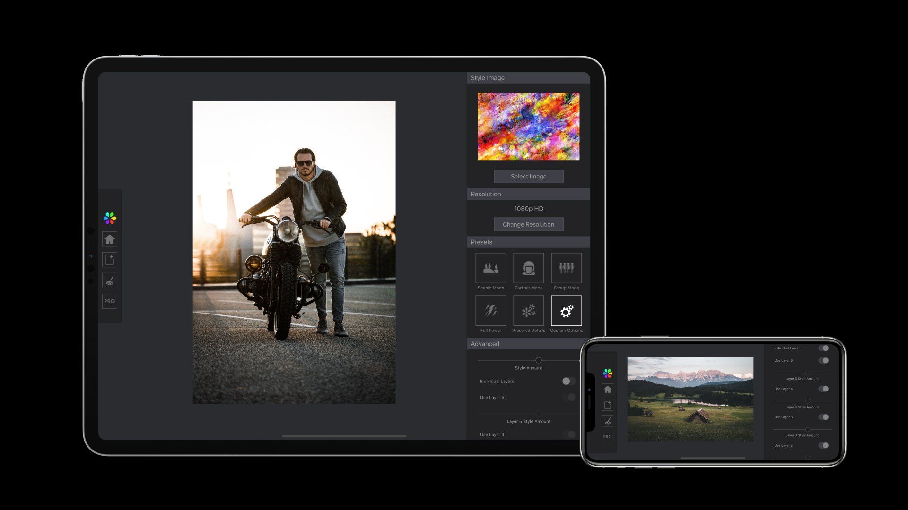
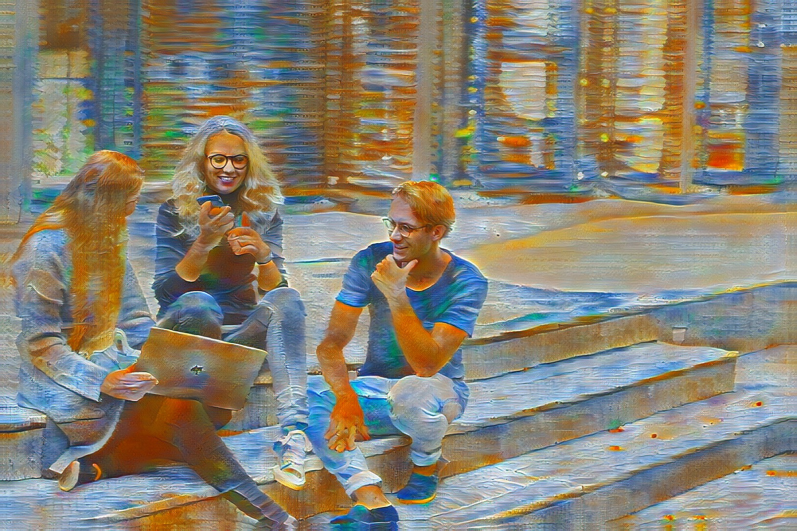

Welcome to
the future.
Infusion uses some of the most advanced technologies in the world to turn photos into art. And now, you can have it on your phone. Packing not one, but two state-of-the-art neural networks as well as many other features for professionals, Infusion is one of the most advanced AI apps ever. Welcome to the future of art.
Lightyears ahead
in 4k UHD*.

Generate detailed artworks in up to 3840x2160 pixels with the exclusive LightBooster technology, which uses AI to further enhance the clarity and detail of your artworks. Infusion's artworks stand up to scrutiny for even the smallest details.
* Maximum resolution available is dependent on device hardware.
Fine-tune for
the perfect look.

With a vast array of fine-tuning options, Infusion allows you to adjust parameters until you arrive at the perfect result. Have unprecedented control over how your art will look. Adjust the stylisation strength down to the finest detail. You are always in control of Infusion's powerful tools.
Change the scenery.
Keep the people.

Infusion comes with intelligent facial preservation technology, which tells its AI to not distort faces when creating artworks. Understanding what to change is important, but so is understanding what to keep.
Seeing is believing.
Download Infusion today.
Find your inspiration and establish your style with the most private and advanced AI art app ever. Download Infusion today.